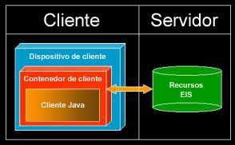
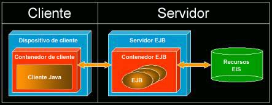
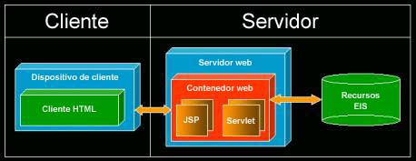

| Concepto: Configuraciones de despliegue de J2EE |
 |
|
| Elementos relacionados |
|---|
IntroducciónLa plataforma J2EE da soporte al desarrollo y despliegue de varias configuraciones de despliegue estándar. Son estas configuraciones de despliegue estándar origen de muchas conjeturas en relación con el desarrollo de la aplicación. En las siguientes secciones, encontrará descripciones sobre las configuraciones de despliegue más habituales así como de sus ventajas e inconvenientes. Si todavía no está familiarizado con los conceptos de J2EE, consulte los conceptos descritos en la sección Visión general de Java 2 Platform Enterprise Edition (J2EE) antes de continuar. Configuración de despliegue autónomoEn la figura 1 se muestra la primera configuración de despliegue. En esta configuración, no hay un contenedor web ni un contenedor EJB, un cliente accede a los recursos EIS directamente y es responsable de manejar toda la lógica de presentación, la lógica empresarial y la lógica de integración por sí mismo.  Figura 1: Configuración de despliegue autónomo. A primera vista, esta configuración parece atractiva para aplicaciones que dan lugar a una manipulación simple de los datos que se mantienen en los recursos EIS. Sin embargo, esta configuración puede tener varios inconvenientes. Los cambios que se realicen en los recursos EIS tienen un gran impacto en la implementación de la aplicación, que a menudo depende de forma directa de la estructura interna de cada recurso EIS, como por ejemplo la estructura de tablas de bases de datos. Cualquier cambio en la misma aplicación requiere una implementación completa para cada usuario; no hay un servidor en el que esté desplegada la aplicación de forma que los clientes no tienen un acceso inmediato a los últimos arreglos. Además, la configuración del despliegue no fomenta una división de responsabilidades. Por ejemplo, a menudo ocurre que la lógica de la presentación y la lógica empresarial están fuertemente acopladas, haciendo difícil el dar soporte al mantenimiento y la evolución de la aplicación. Sin embargo, los verdaderos problemas con esta configuración de despliegue, comienzan a aparecer cuando se decide escalar la aplicación. Las estaciones de trabajo de cliente tienen características limitadas de rendimiento, de forma que lo ideal, sería distribuir el proceso entre distintas máquinas. Sin embargo, la configuración autónoma no está diseñada para dar soporte al proceso distribuido. Además, cuando se intenta dar soporte a más clientes accediendo a los recursos EIS de forma concurrente, puede encontrarse que las aplicaciones están restringidas por el recurso EIS en sí mismo como, por ejemplo, el número de conexiones de base de datos concurrentes. Configuración de despliegue centrado en EJBEn la figura 2 se muestra la configuración de despliegue centrado en EJB. En esta configuración, existe un contenedor EJB entre el contenedor del cliente y los recursos EIS, así mismo, no hay un contenedor web. La lógica de presentación está en el cliente y la lógica empresarial reside en el EJB. En lugar de acceder a los recursos EIS directamente, todas las solicitudes de los clientes las gestionan los EJB que corresponda. Los clientes están, por lo tanto, protegidos ante los cambios en los recursos EIS.  Figura 2: configuración de despliegue centrado en EJB Se ha diseñado la configuración de despliegue centrado en EJB para solucionar muchos de los problemas que hay en la configuración de despliegue autónomo. Desde una perspectiva de escalabilidad, la implementación de la plataforma J2EE permite distribuir el proceso a lo largo de distintas máquinas. Además, un contenedor EJB es el responsable de asegurar un uso eficiente de los recursos limitados como, por ejemplo, las conexiones con las bases de datos. Desde una perspectiva de mantenimiento y evolución de una aplicación, esta configuración también fomenta una separación entre la lógica de la presentación y la lógica empresarial. Sin embargo, uno de los inconvenientes de la configuración de despliegue centrado en EJB es que incluso un pequeño cambio en la interfaz de usuario precisa una implementación completa de la aplicación para cada usuario. A pesar de que la lógica empresarial encapsulada en los EJB se puede volver a desplegar en el servidor (y, por lo tanto, proporcionando a los usuarios un acceso inmediato a todos los cambios), esto no es cierto para la lógica de la presentación. Esto es inconveniente, puesto que el aspecto y apariencia de una aplicación puede estar sometida a frecuentes cambios. Configuración de despliegue centrado en la webEn la figura 3 se muestra la configuración de despliegue centrado en la web. En esta configuración, existe un contenedor web entre el contenedor del cliente y los recursos EIS, así mismo, no hay un contenedor EJB. Tanto la lógica de presentación como la lógica empresarial la manejan elementos en el contenedor web (JSP y servlets). En esta configuración, en el cliente se utiliza un lenguaje de códigos simple como, por ejemplo, HTML, a pesar de que también podría ser XML o WML.  Figura 3: Configuración de despliegue centrado en la web Normalmente, en una configuración de despliegue centrado en la web se enfatiza el aspecto y la apariencia de la aplicación final, con un menor énfasis en el soporte a la lógica empresarial. Una configuración de este tipo es capaz de soportar cambios frecuentes al aspecto y apariencia de una aplicación. Este tipo de configuración es ampliamente utilizado hoy en día. Una configuración de despliegue centrado en la web proporciona varias ventajas. En primer lugar, los clientes no se ven afectados por cambios en los recursos EIS, puesto que los clientes no acceden a estos recursos de forma directa. En segundo lugar, existe la posibilidad de volver a desplegar toda la aplicación sin que sea necesaria ninguna implementación para los usuarios, puesto que la aplicación reside en su totalidad en un servidor. Sin embargo, aunque a veces se considera que la utilización de los EJB es desproporcionada para el trabajo que se tiene entre manos, la omisión de los EJB tiene como resultado la aparición de algunos de los problemas de la configuración de despliegue autónoma. De forma específica, esta configuración no fomenta una clara división de responsabilidades entre la lógica de la presentación y la lógica empresarial, a menudo dando lugar a elementos fuertemente acoplados que impiden el mantenimiento y la evolución de la aplicación. Además, todos los problemas relacionados con la escalabilidad presentes en la configuración de despliegue autónomo también se aplican a una arquitectura centrada en la web. Configuración de despliegue de varias capasEn la figura 4 se muestra una configuración de despliegue de varias capas. Esta configuración incluye tanto un contenedor web y un contenedor EJB, y muestra todas las ventajas tratadas en las otras configuraciones de despliegue sin ninguno de sus inconvenientes. Los elementos en el contenedor web manejan la lógica de presentación, aunque los EJB en el contenedor EJB manejan la lógica empresarial.
Figura 4: Configuración de despliegue de varias capas. Los clientes no se ven afectados por cambios en los recursos EIS puesto que no se accede directamente a estos recursos. Además, existe la posibilidad de volver a desplegar toda la aplicación sin que sea necesaria ninguna implementación para los usuarios, puesto que la aplicación reside en su totalidad en el servidor. Desde una perspectiva de escalabilidad, el proceso se puede distribuir para dar soporte a procesos concurrentes. También desde una perspectiva de escalabilidad, el contenedor EJB es el responsable de asegurar un uso eficiente de los recursos limitados como, por ejemplo, las conexiones con las bases de datos. Desde una perspectiva de mantenimiento y evolución de una aplicación, esta configuración también fomenta una separación clara de responsabilidades. La lógica de presentación se desacopla de los recursos EIS, y la lógica empresarial se aísla del aspecto y la apariencia. Esta clara separación puede ayudar en la asignación del trabajo a distintos desarrolladores expertos y permite el desarrollo de forma concurrente de la lógica empresarial y la lógica de presentación. La configuración de despliegue de varias capas también facilita la migración de un dispositivo de cliente (como por ejemplo, un navegador web) u otro (como por ejemplo, un PDA). No es necesario reescribir toda la aplicación puesto que la lógica empresarial encapsulada en los EJB no cambia y se puede utilizar tal como está. A modo de resumen, hay varias configuraciones de despliegue, cada una con sus ventajas e inconvenientes. Uno de los objetivos de la plataforma J2EE es ser lo suficientemente flexible para dar soporte a cualquier configuración de despliegue que se considere apropiada para una organización y al mismo tiempo resolver las preocupaciones de la empresa. |

© Copyright IBM Corp. 1987, 2006. Reservados todos los derechos. |